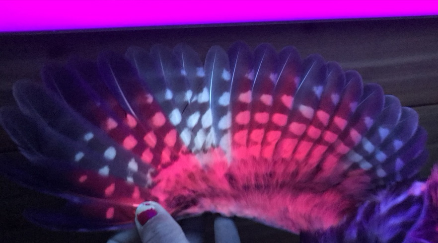
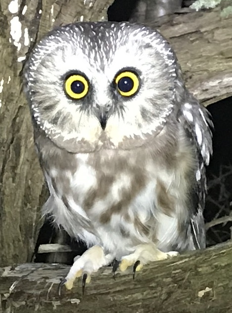
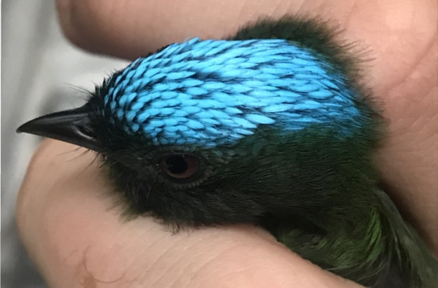

Wild Encounters
Up-close and Personal
BIRD-BANDING AT HOME
Prince Edward County
Insert static map here
- Volunteering at the bird banding station gives me the chance to handle some beautiful birds, including species at risk such as Bobolinks and Canada Warblers


- In the fall, they also band Northern-saw whet owls. When you look at the feathers under an ultra-violet light, the porphryn pigments will cause certain feathers to become fluorescent pink, which helps to determine the age of the individual.


BIRD-BANDING ABROAD
Madre de Dios, Peru
Insert static map here

- Aging and sexing birds in the Amazon is much more difficult because they breed at any time of year.
- However, sometimes you get lucky and see a flamboyant male like this Blue-headed Manakin

HANDLING AMPHIBIANS
Western Ontario
Insert static map
- I got well-acquainted with our local Ontario salamander species when I monitored them for 9 weeks in 2019.


- While on Pelee Island, I did road mortality surveys by bicycle, but sometimes we found live snakes as well.